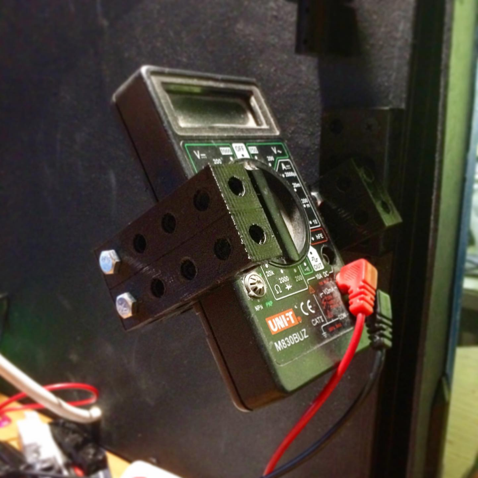
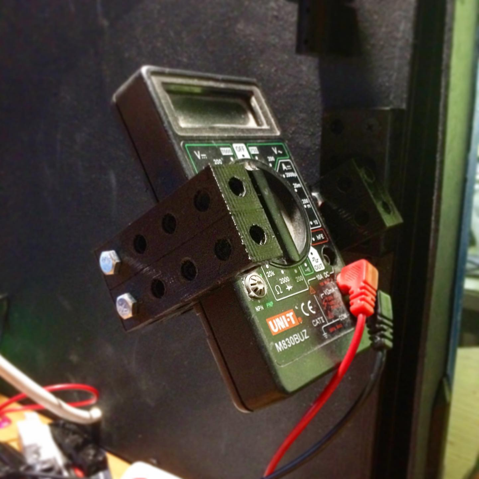

The history of the creation of this designer is multifaceted. We see that technology is moving
towards modularity. In the creative process, humanity comes to standardization.
This constructor can be a continuation of the child’s development after the Lego constructor. After
gaining experience in game design, the elements of this designer can be used in real prototyping.
Also disappointing is the cost of repairing various devices. If most devices were assembled from the
most universal blocks, then their repairs would be cheap.
Another thing that disappoints me is that when technology becomes obsolete, it is not suitable for
reuse. If it consisted of universal modules, reusability would increase significantly.
Some of the ideas listed above seem difficult to implement, but others are absolutely possible.
My designer has undergone some testing with practice. But its development potential is incomparably
greater.


In the process of developing the designer, I identified many imperfections and developed a
constructive solution.
I also achieved greater strength by using less plastic. If you increase the filling of the model
with plastic, then the part will be even stronger. These parts can be made from other materials.
The design of the blocks takes into account the behavior of plastic during 3D printing


If you think deeper, there are no blocks. There is only substance, like clay.
But man, thanks to his creative abilities, has created many structures of the material world.
The same screw or nut are not absolute phenomena, but merely an idea.


1. “A universal designer is not just a machine, it is a mirror of evolution, reflecting the infinite
potential of the human mind.”
2. “Each era has its own constructor that shapes the world, but only the human spirit is able to
realize and direct this creation.”
3. “The development of the world is a ballet of endless possibilities, where every step of a person
changes the choreography of the universe.”
4. “The universal constructor contains the wisdom of the past, the energy of the present and the
mystery of the future.”
5. “A person is not just the designer of his own destiny, he is the architect of the whole world in
miniature.”


6. “The creation of a universal designer reminds us that every little thing in the world carries an
echo of eternity.”
7. “Like an artist in front of a canvas, so a person is in front of a universal designer: his every
action is a stroke on the picture of the world.”
8. “The development of the world and man are two strings of the same violin, the sound of which
creates the harmony of existence.”
9. “The Universal Designer is a song of time, where the notes are the choices we make every day.”
10. “A person in the hands of a universal designer is like a seed from which the tree of reality
sprouts.”


11. “The world develops through the interaction of opposites, and the universal designer is a
workshop where these opposites meet.”
12. “The universal designer does not create the world - he opens it, like a bud opens a flower.”
13. “Man and the world are eternally woven, like threads in the fabric of existence, and the
universal designer is the loom of time.”
14. “Every moment in a universal construction set is a chance to rewrite the history of the world
and your own destiny.”
15. “The Universal Designer reminds us that every action we take opens a new chapter in the book of
the universe.”


16. “A man in the world is like the captain of a ship: a universal designer is his compass leading
to the unknown
to these shores of existence."
17. “The world is not static, it is constantly transforming under the influence of the universal
designer - human aspiration and innovation.”
18. “The universal designer opens the doors to a world where every dream can come true.”
19. “Through the universal constructor, man enters into a dialogue with the cosmos, and his every
decision echoes in the Universe.”
20. “The development of man and the world is a journey in which the universal constructor serves as
a map and compass.”


21. “Each of us contains a universal constructor capable of creating miracles if we find the key to
its potential.”
22. “The world is a canvas, and a person with a universal constructor is an artist who turns his
dreams into a painting of reality.”
23. “The universal designer reminds us that in every act of creation there is a hidden particle of
infinity.”
24. “The development of the world goes hand in hand with the development of man, and every step in
this dance is determined by a universal designer.”
25. “A universal designer is not just a tool, it is a reflection of a person’s inner world, his
aspirations and dreams.”


26. “A person creates the world around him, like a sculptor creates a statue, and a universal
designer creates his chisel and hammer.”
27. “In each of us lives a universal designer capable of transforming the world and opening new
horizons.”
28. “The world is constantly changing, but the universal designer gives us the key to understanding
these changes and participating in them.”
29. “The universal designer is a symbol of the fact that the human spirit knows no boundaries in its
quest for creativity and knowledge.”
30. “Through the universal constructor, a person communicates with the world, and his every choice
becomes an echo in eternity.”


 
